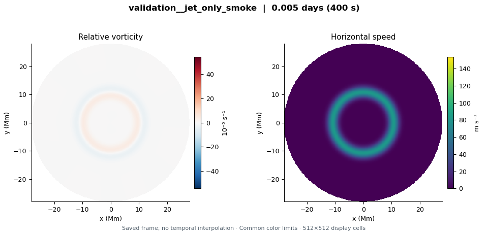
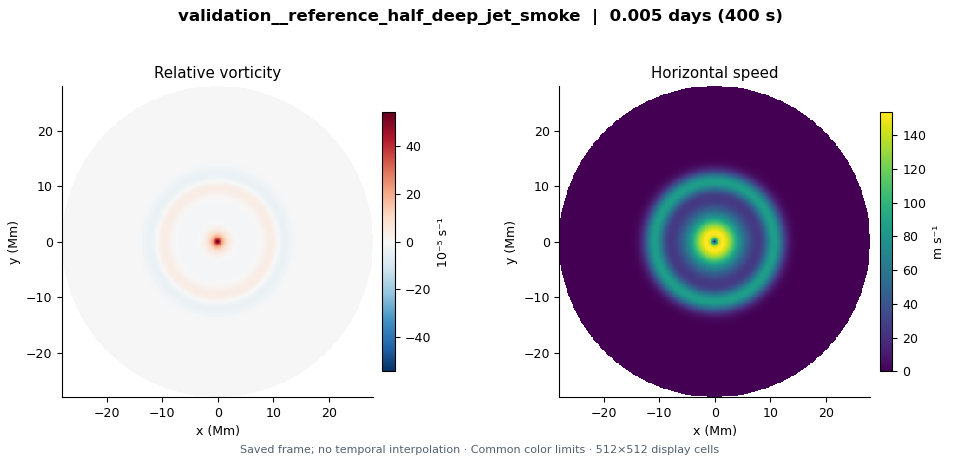

validation__jet_only_smoke
LD 3.2 Mm · Upper circular jet × 0; upper cyclone × 0 · 0.0046296 model days
Explore this run →Three 400-second software checks of the regularized circular jet and cyclone initializer and prescribed deep flow. The jet-only and reference cases have different upper flows; this set is not a controlled stabilization comparison. Longer formation and stability experiments are separate.
These are short software-validation runs. CPU/GPU agreement does not establish hexagon persistence, spatial convergence, or physical stability. The nearly unchanged flow over this interval is not a stabilization result.

LD 3.2 Mm · Upper circular jet × 0; upper cyclone × 0 · 0.0046296 model days
Explore this run →
LD 3.2 Mm · Upper circular jet × 0.5; upper cyclone × 0 · 0.0046296 model days
Explore this run →LD 3.2 Mm · Upper circular jet × 1; upper cyclone × 1 · 0.0046296 model days
Explore this run →